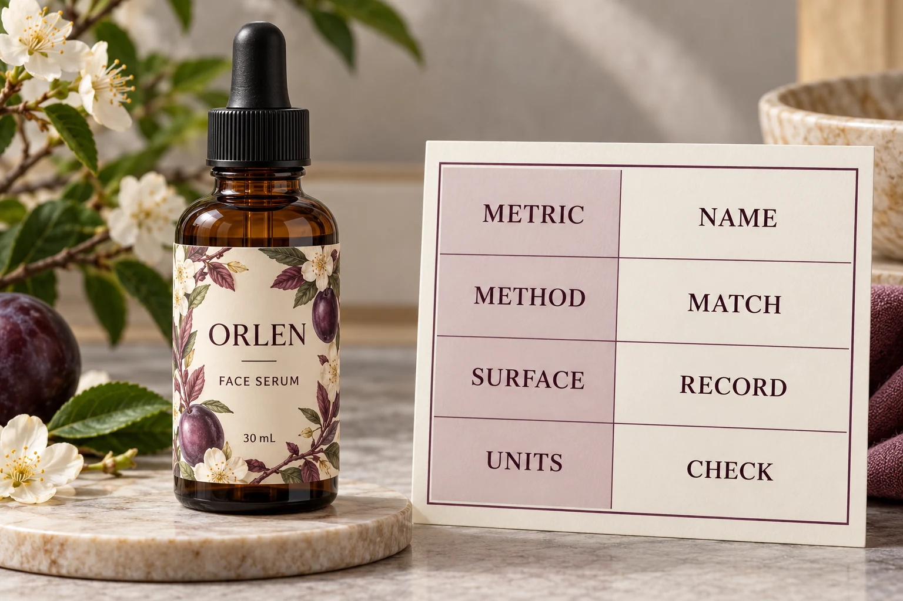

Read the heading before the value
Write down the full reported metric. Keep loop tack, peel adhesion and any other named result in separate fields rather than collecting them under a general strength heading. The method reference belongs beside the result, not in a footnote that disappears from the purchasing sheet.
Avery Dennison's SYS067 preliminary data sheet provides a simple reading example: separate entries identify loop tack and peel at specified dwell intervals, with method references and typical-value notes. It is a 2014 tyre-label document, not a cosmetic-label recommendation.
The useful lesson is how the fields are distinguished. No force value, test procedure or acceptance threshold from that product should be transferred to your bottle project.
Put the method and geometry back into the sentence
A number copied without its test description loses information the technical reviewer may need. Obtain the method name or reference, relevant geometry, preparation and observation conditions from the supplier. Ask which parts are stated and which require clarification.
For a peel result, for example, preserve the reported angle rather than assuming all entries describe the same arrangement. Do not make your own conversion between different methods to produce a more convenient ranking. The person familiar with the methods should explain whether the results are comparable.
This article is a procurement reading guide, not a laboratory method. It does not supply a pulling speed, specimen preparation recipe or required equipment. A hand demonstration should not be labelled as a standard-method result unless it actually followed that method and the necessary assessment.
Keep the surface and the wait visible
Record the reported test surface. A reference panel named on a data sheet is not the brand's bottle simply because both are smooth to the touch. A coating, resin, texture or preparation difference can make the intended application a separate question for evaluation.
Likewise, preserve the stated dwell or conditioning. An observation taken soon after application and one taken after a defined interval should not quietly be treated as interchangeable. If the supplier has not supplied the relevant interval, record that gap before using the value to justify a release.
The adhesive sample-planning guide helps organise comparable observations on actual containers. Here, the prior task is deciding whether the published figures being compared even describe equivalent measurements.
Align units without pretending that units fix everything
Copy both the force unit and any width basis. If a technical reviewer normalises the entries, keep the original figures and the conversion alongside each other. A force per stated width is not the same record as a force with no width identified.
Matching units still does not make unlike metrics equivalent. Two values can be expressed with the same unit while referring to different surfaces, waiting intervals or methods. A neat spreadsheet can conceal that mismatch rather than solve it.
Keep status wording too. Typical reference data, an agreed delivery specification and a result from an identified project sample have different evidential roles. Ask what the supplier is actually offering and what remains to be established for your use conditions.

Build a data question the supplier can answer
Use one row for each reported result. Attach the complete current data sheet so the supplier can see the context instead of having to reconstruct it from a cropped number.
| Record | What to retain | Purchasing question |
|---|---|---|
| Construction | Stock and adhesive reference, revision | Is this the combination quoted? |
| Metric | Full measurement heading | Are we comparing the same property? |
| Method | Reference and relevant geometry | Are the methods comparable? |
| Conditions | Surface, dwell and stated preparation | What differs from the intended bottle? |
| Units | Force and width basis as supplied | Is any normalisation explained? |
| Evidence status | Typical data, agreed specification or sample result | What conclusion can this support? |
| Next action | Missing input, reviewer and proposed evaluation | What still prevents selection? |
Reconcile identity first. Then ask the technical reviewer to identify meaningful similarities and differences. If the entries cannot be compared, do not force a winner: ask for suitable information or agree a focused evaluation of the actual constructions.
That is also a useful limit on requests for more data. Ask which missing information would change the buying decision. A larger folder of unrelated test values does not necessarily make the order easier to approve.
Two reasonable decisions can follow different evidence
Consider a hypothetical repeat project with an identified construction, unchanged container and applicable existing approval. The buyer may chiefly need to confirm that the quoted reference and conditions remain current. A new comparison exercise is not automatically valuable.
Now consider a new coated container with two unqualified alternatives. Reference-panel values can help the supplier discuss them, but they do not settle the bottle-specific choice. Arrange a relevant sample plan with the technical parties and record what the review covers.
In neither case does the largest isolated number deserve automatic preference. The useful advantage is evidence answering the intended requirement, with its limitations preserved.
For broader stock options, see the cosmetic label material guide. For custom cosmetic labels, send the bottle reference, proposed size, artwork, quantity by design and actual use conditions. Add the complete data sheets and identify the entries that appear inconsistent.
The inquiry form prepares a message; send attachments through email or WhatsApp. Ask which measurement should inform the unresolved decision, rather than asking the printer to defend whichever force value happens to look biggest.